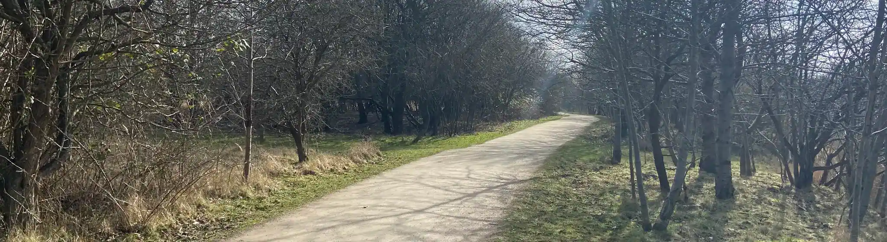
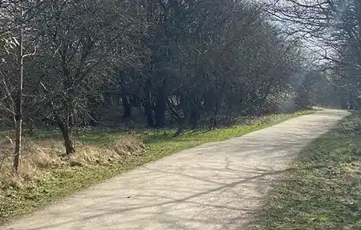

Sydhavnstippen byder på unikke natur- og dyreoplevelser for alle aldre
I Københavns Sydhavn, kun 10 minutters gang fra metro og bus, finder du kultur- og naturområdet Sydhavnstippen - også kaldet Tippen i daglig tale.
I dette naturskønne område kan du møde fritgående dyr i årets varmeste måneder.